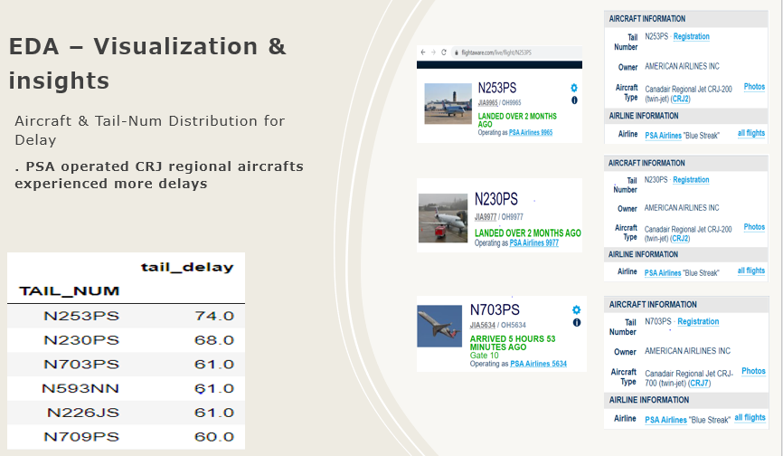

Flight delaying analysis with classification algorithms
This is my solo capstone project for Data Science Immersive with General Assembly.
The dataset contains US cities flight records during Janaury 2020 with features about date, aircraft, airline and delaying status. I decided to use other features to predict whether a future flight will be delayed with classification algorithms.
I also attempted the NLP techniques to calculate the feature importance of features with object datatype and see their impacts on the delaying status of flight.
All of algorithms (decision tree, random forest, and garident boosting) have brought good accuracy scores and I have visualized the feature importance.
I am also planning to future development with weather data or API to get better
Link to Git Repo
Technologies:
- - Pandas
- - Numpy
- - Seaborn
- - Matplotlib
- - NLP
- - ELI5
- - Classification Algorithms
- - Sciki-learn
Dataset
Sample EDA 1
Sample EDA 2

Feature Importance 1

Feature Importance 2